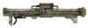
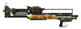
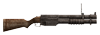
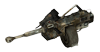

На главную Оружие Об игре Купить в Steam
На главную Оружие Об игре Купить в Steam
| Место в топе | Фото | Название | Урон | Урон в секунду | Боеприпасы | Обойма | Стоймость | Требования к навыкам |
| 1 |  | Аннабель | 220 | 275 | Гранатометный выстрел | 1 | 5200 | Взрывчатка:100, Сила:8 |
| 2 |  | Толстяк | 202 | 56 | Ядерный выстрел | 1 | 6000 | Взрывчатка:100, Сила:8 |
| 3 |  |
Милосердие | 50 | 155 | 40-мм граната | 18 | 5200 | Взрывчатка:100, Сила:8 |
| 4 |  | Многозарядный 40-мм гранатомет | 80 | 117 | 40-мм граната | 4 | 4200 | Взрывчатка:75, Сила:5 |
| 5 |  | Автоматический гранатомет | 35 | 105 | 25-мм граната | 30 | 5200 | Взрывчатка:100, Сила:8 |
| Оружие | Местонахождение |
| Аннабель | На горе Блэк, у тени-снайпера на вышке. |
| Толстяк | Оружейники. Ангары АБ Неллис |
| Милосердие | Найти «Милосердие» можно в конце пещеры Дед-Винд, в её дальнем конце, рядом с трупом паладина Братства Стали и живым легендарным когтем смерти. |
| Многозарядный 40-мм гранатомет | На авиабазе Неллис некоторые бомбисты вооружены этим оружием, в частности Матушка Перл. Два экземпляра лежат в оружейной Убежища 34 вместе с боеприпасами. Появляется в ассортименте у различных торговцев с ростом уровня персонажа. На горе, между локациями посёлок Хиггса и X-2 Трансляционная сеть.Кроме того, этот гранатомёт можно приобрести у торговцев. |
| Автоматический гранатомет | Во Фрисайде в магазине «Мик и Ральф» можно купить два автоматических гранатомёта, если игроку открыт доступ к особым товарам. У Ракель на АБ Неллис В Хидден-Вэли в продаже у рыцаря Торрес. В Красном караване у торговца |